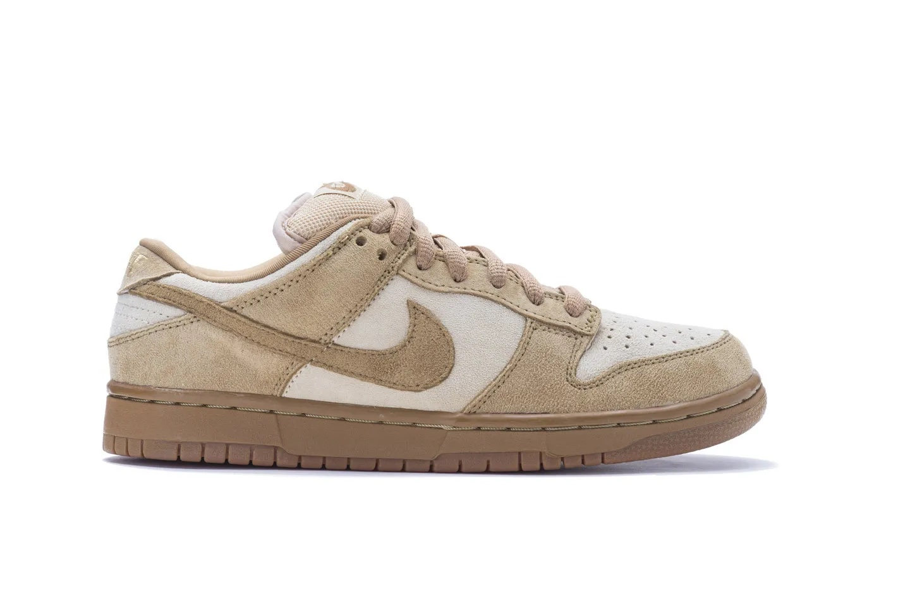
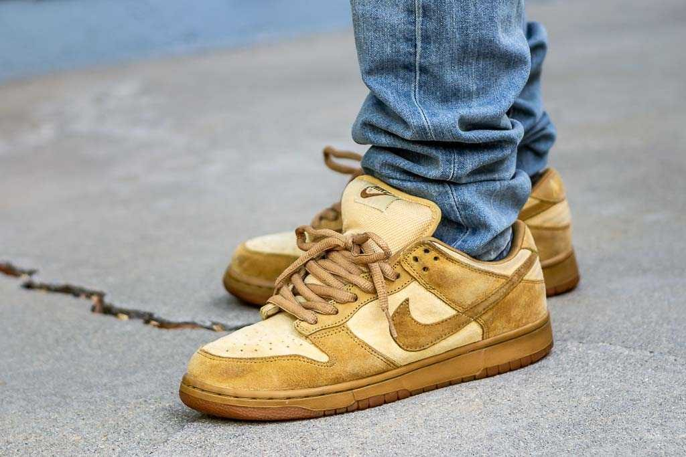

Nike Dunk SB Low “Reese Forbes”
Released in March 2002
The second suede Nike SB sneaker released, these Timberland boot-colored kicks were designed by Reese Forbes who later designed the Hunters. A wheat color suede is used as the base, while a buttery lighter shade suede is used on the toe and side panel. Its finished with a classic gum sole. This sneaker was over-looked at the time of its released, but it has since gained much popularity. Learn More.
Dunk History More infoNike Dunk Reese Forbes in Action

The Earthtones of the Nike Dunk "Reese Forbes" make for a very versatile colorway. This shoe can compliment many outfits.

Here sits professional skateboarder Reese Forbes, the man who designed this shoe back in 2002.
Thank you for taking time to learn about Reese Forbes and this early Nike Dunk Low.